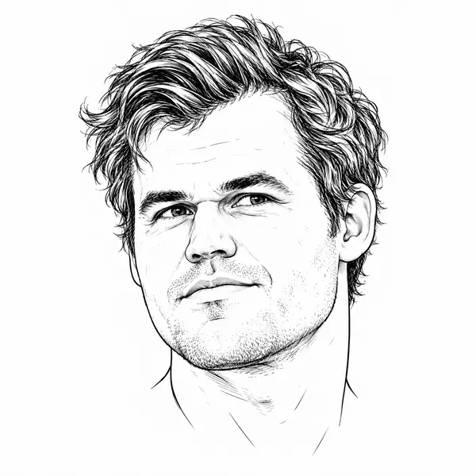

Scacchi
Ho scoperto gli scacchi da poco, ma mi hanno subito appassionato. Mi piace che richiedano concentrazione e strategia: ogni mossa conta e ti porta a pensare a quelle che potrebbero essere le due o tre successive.
flurred19 · Rapid—Caricamento…
Giochiamo una partita?
Su Chess.com
